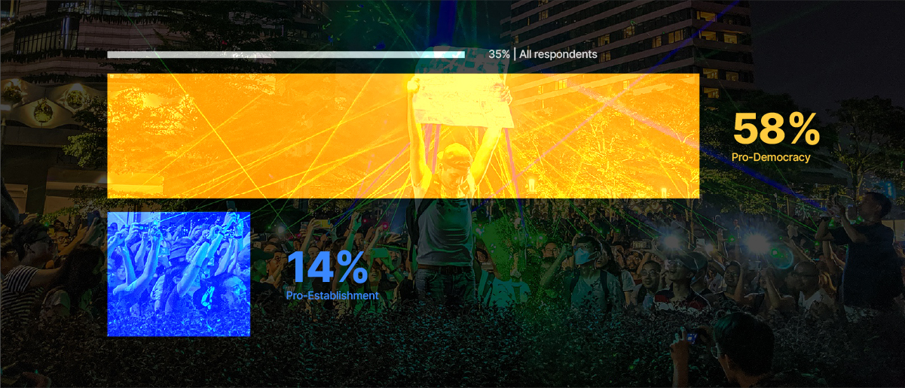
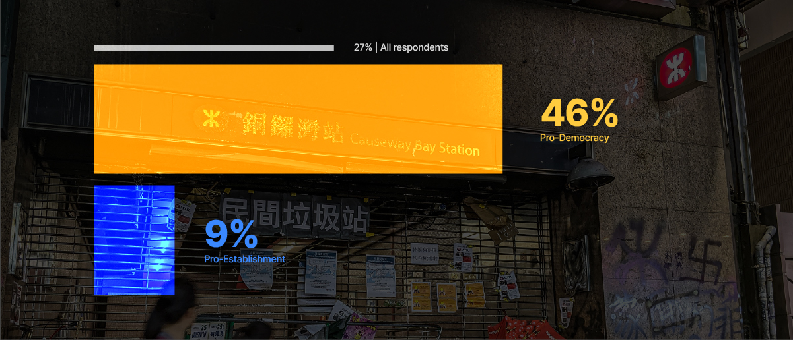
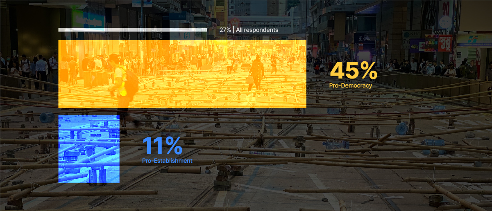
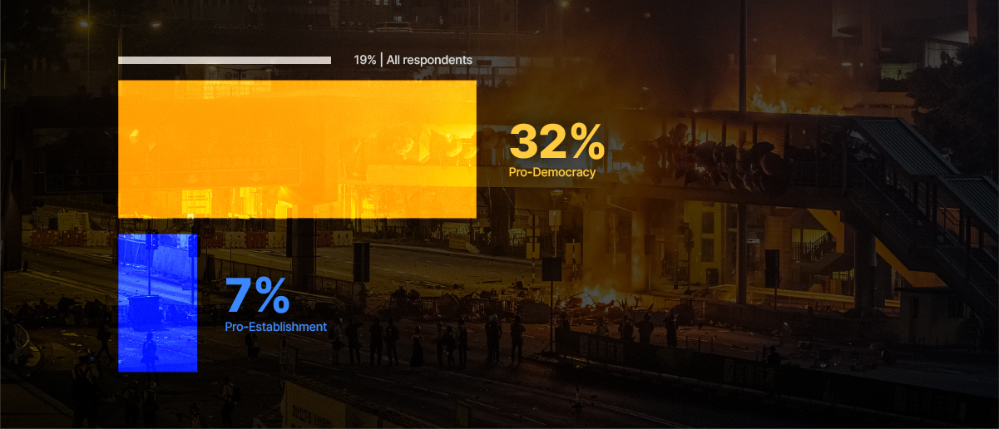

Support for protest tactics





The 2019 Hong Kong District Council elections were held on 24 November
2019, six months after multiple rounds of widespread protests
triggered by the introduction of the Fugutive Offenders amendment
bill.
Election results saw 388 of the 452 District Council seats
returning a pro-democracy candidate. While pro-democracy voters feel
galvanised by the result, most are sceptical about the future.
Post-election, their mood can be best summarised as “savouring victory
today as the road ahead will be tough”.
Here at Blackbox
Research, in conjunction with the South China Morning Post, we decided
to look deeper into the underlying sentiments beneath this
unprecedented election result.
(Click on the legend below to interact with the chart)
While the pro-democracy camp is clearly catalysed by clear ambitions
for the future of Hong Kong and its relationship with China (53%),
analysis of voting determinants reveals those voters were also drawn
together by police conduct towards the protesters (49%). This was the
second biggest vote driver and, indeed, may have been the decisive
factor that contributed to the blow out result on election day.
In
contrast, pro-establishment voters say they voted to speak out against
the ongoing violence (36%) as well as to express their views about the
current protests (23%).
As the key factor influencing the choice of Hong Kongers' votes, attitudes towards the protests turned out to be polarising and divisive. Voters in the pro-democracy camp were more likely to support the protest and its tactices, while the pro-establishment counterparts were more likely to oppose it.
As it stands, 24% of Hong Kongers claimed to have taken part in a protest before. This figure stands at 42% for those who are pro-democracy and 8% for those who are pro-establishment.
Diving deeper into the protest tactics deployed, Hong Kongers were
more likely to support non-violent methods such as using laser pens on
police officers (35%), blocking the MTR (27%) or major roads (27%).
Damaging
public property was mostly frowned upon, as only 19% of all
respondents expressed support, compared to 32% in the pro-democracy
camp.

When asked on their preferred outcome with regards to the protests,
24% of Hong Kongers would rather the protests continue, while 14%
expressed support for tougher actions to stop the ongoing unrest.
When
viewed along partisan lines, more than 4 in 10 pro-democracy Hong
Kongers hoped the protests will continue till the "Five Demands" are
met. On the other hand, 1 in 4 pro-establishment Hong Kongers believe
in taking tougher actions from the authorities.
Attitudes towards the police loom large in the survey results. Trust has clearly eroded with 45% of democrat leaning voters saying they now have zero trust in the HK police, while 84% characterise police action as harsh.
More than 1 in 2 Hong Kongers felt the police actions towards the
protesters were too harsh. This figure obviously stands out among the
pro-democracy voters (84%). Even those in the opposite camp (26%)
deemed the police behaviours as excessive.
Democrat-leaning
voters almost universally support demands for an independent
commission to investigate police actions (93%) and even 44% of
pro-establishment voters support such a commission.
Despite the election result, Hong Kong voters appear to be in a sober
frame of mind about the future. Few are optimistic about any
short-term resolution and many believe worse may be to come. Moreover,
outside intervention and support is not necessarily seen as carrying
any real benefit.
Most acknowledge this is their fight to win or lose and
there appears to be a strong resolve to stick to what their intentions
have always been – retaining the autonomy promised under the one
country, two systems framework. And add to that - holding the police
accountable.
Holding a realistic view on the situation, only 11% of Hong Kongers
believe the authorities will give in to protester's demands. Having a
dialogue some time down the road is the preferred middle ground chosen
by 4 in 10 Hong Kongers. This option was also selected by 49% of those
in the pro-democracy camp and 35% in the pro-establishment camp.
Still,
some Hong Kongers hold the pessimistic view that a crackdown on
protesters will take place, with strongarm actions enforced to prevent
such incidents from happening again.